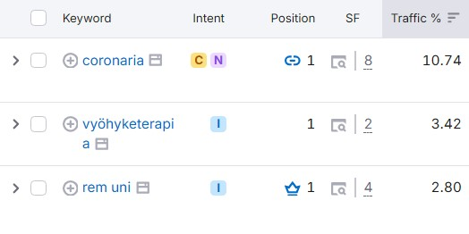

I was responsible for creating the SEO-optimized content for the launch of the wooden sunglasses, ensuring it aligned with the brand's voice and values.
This included writing product page and collection page texts, as well as crafting a blog post, all designed to improve search engine visibility and enhance the customer experience.
Since taking sole control of Night After’s TikTok on August 1st 2024, I have gained 2.8 million views through strategic content creation and audience engagement. By leveraging trends and crafting highly shareable videos, I boosted visibility and built a passionate, engaged community, delivering impressive results.

I improved in-page SEO across Coronaria Oy websites by conducting keyword research, optimizing meta tags, headings, internal linking, and enhancing content for target keywords. Using Hotjar data, I adjusted page structures and CTA buttons to enhance user experience, leading to better search rankings and increased traffic.
I planned, negotiated and promoted a successful gig that drew nearly 100 attendees on a limited budget, despite operating in an untapped market. I created captivating visual content, and strategically managed Meta ads to maximize reach and drive attendance, demonstrating my skills in event production, cost-effective advertising, and audience engagement.
I led the rebranding of Night After, transforming their visual identity, messaging, and overall style to better align with their evolving sound and audience. This included selecting new brand colors, designing an updated logo, refining social media presence, and crafting a cohesive brand narrative for a stronger, more recognizable image.